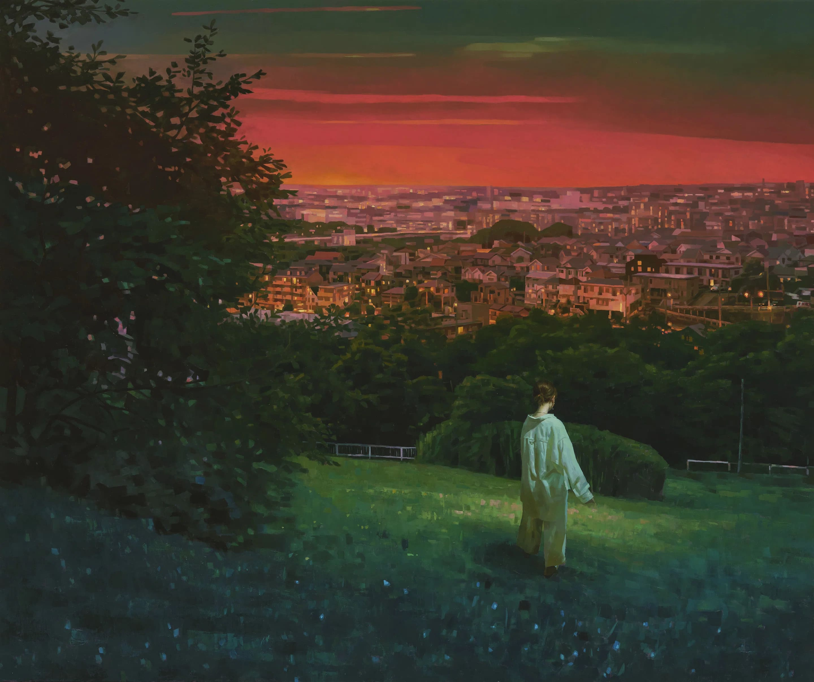

After Light
创作介绍
Keita Morimoto:与2021年所作“After Light”
Keita Morimoto 的艺术家实践主要建立在“观察”的过程之上。凯塔注意观察周围的一切和日常生活中发生的事
情，并将他的风格基础建立在对名画的观察上。在加拿大上学期间，凯塔发现自己开始沉迷于经典绘画传统，“痴
迷”地研究并开始发现它们的形成方式。回顾那个时期，凯塔认为荷兰画家伦勃朗对他的作品影响最大，“因为我
对这些历史风俗画是如何通过使用明暗来创造叙事来构建的有了如此多的认识”。